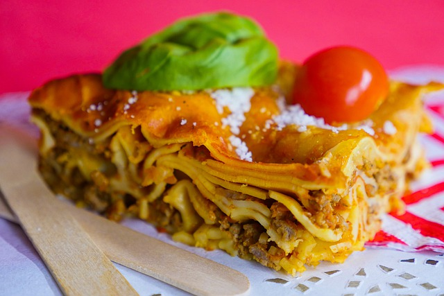

Lasagna

Description
This is the best lasagna recipe on the entire internet, in fact it is the best ground beef lasagna ever. Try it, you'll love it!
For a traditional hearty meat lasagna you can go no further than this incredible dish.
Ingredients
- 1 package of lasagna pasta sheets
- 1 pound lean ground beef
- 3 cans tomato sauce
- 1 can tomato paste
- 2 teaspoons garlic salt
- 5 tablespoons Italian seasoning
- 1 pint part-skim ricotta cheese
- 2 cups shredded mozzarella cheese
Steps
- In large saucepan cook ground beef. Drain excess grease. Combine sauces and tomato paste width
ground beef and simmer until bubbly. Add garlic salt and Italian seasoning
and reduce heat to low simmer. Cook for 10 minutes.
- To assemble, in the bottom of a 13x9 inch baking dish spread a thin layer
of sauce. Next, add a layer of pasta sheets, ricotta cheese, sauce/ground beef
mixture, and then grated mozzarella cheese. Repeat until baking dish
is filled. Garnish top with additional shredded mozzarella cheese.
- In a preheated 375 degree F oven bake for 30 minutes or until bubbly.
Let stand for 15 minutes and serve.
Back to Recipe List